idle
academy-idle
genin-idlesage-idlekcm-idle
sixpaths-idle
kurama-idlethinking
academy-thinking
genin-thinkingsage-thinkingkcm-thinking
sixpaths-thinking
kurama-thinkingother
academy-working
kcm-workingkurama-workingacademy-attention
kcm-attentionkurama-attentionacademy-errorkcm-errorkurama-erroracademy-sleeping
kcm-sleeping
kurama-sleeping